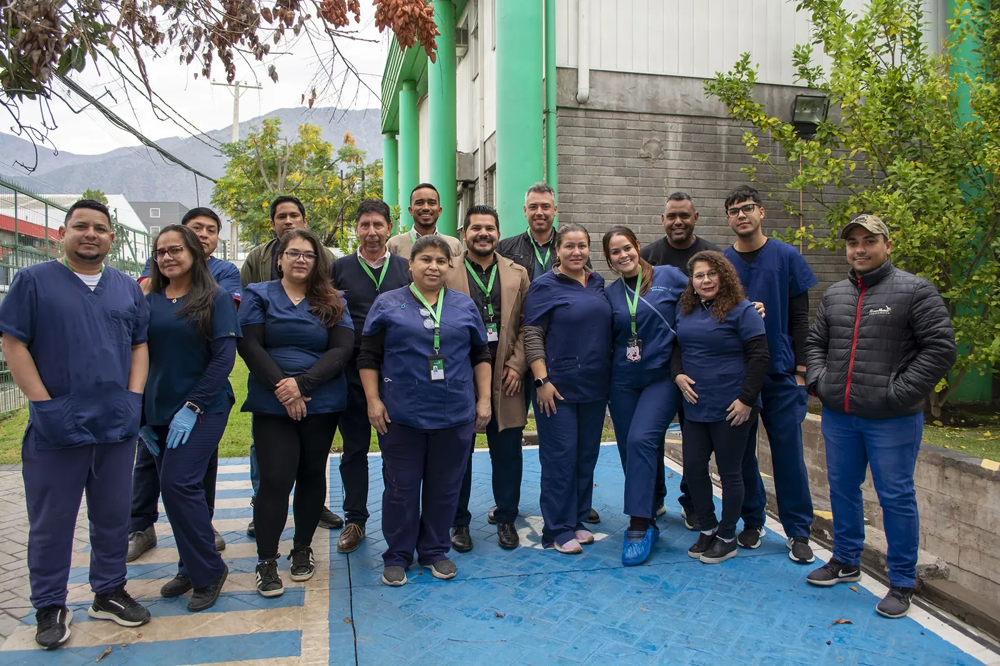

Las personas que lo hacen posible
Un equipo unido por el bienestar.
Experiencia, compromiso y distintas especialidades trabajando juntas para acompañar a personas de todo Chile.

Quiénes somos
Fabricamos y distribuimos productos naturales y suplementos alimentarios para contribuir a una vida saludable.
La experiencia acumulada durante nuestra trayectoria nos impulsa a seguir incorporando alternativas, presentaciones y tendencias para acompañar distintos estilos de vida. Además, la empresa distribuye medicamentos intrahospitalarios de alta complejidad.
Ser un referente nacional en fabricación y distribución de productos naturales, acompañando a las personas según su estilo de vida.
Contribuir a una vida saludable fabricando y distribuyendo productos naturales y suplementos alimentarios a lo largo de Chile.
Principios
Compromiso con las materias primas y el resultado final.
Bienestar pensado para estar al alcance de más personas.
Una oferta amplia que responde a diferentes preferencias.
Una relación respaldada por años de experiencia en Chile.
Sigamos conversando
Nuestra ubicación
Visítanos en Los Ebanistas #8521, La Reina, Santiago. Nuestro equipo atiende de lunes a viernes, de 8:30 a 17:30 hrs.
Cómo llegar